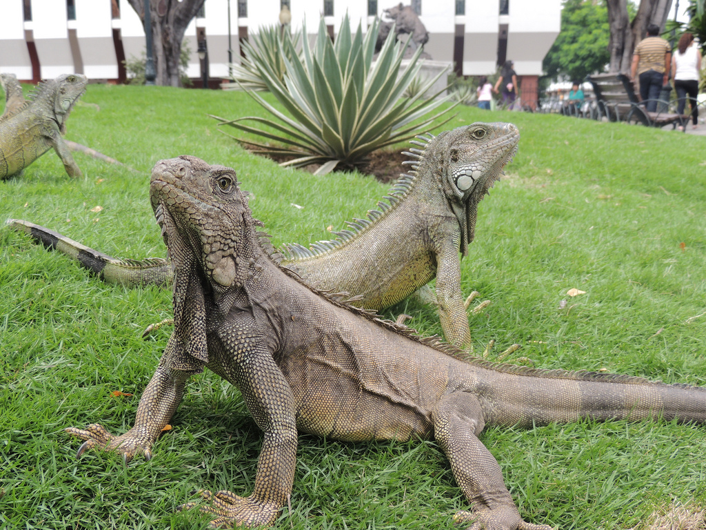
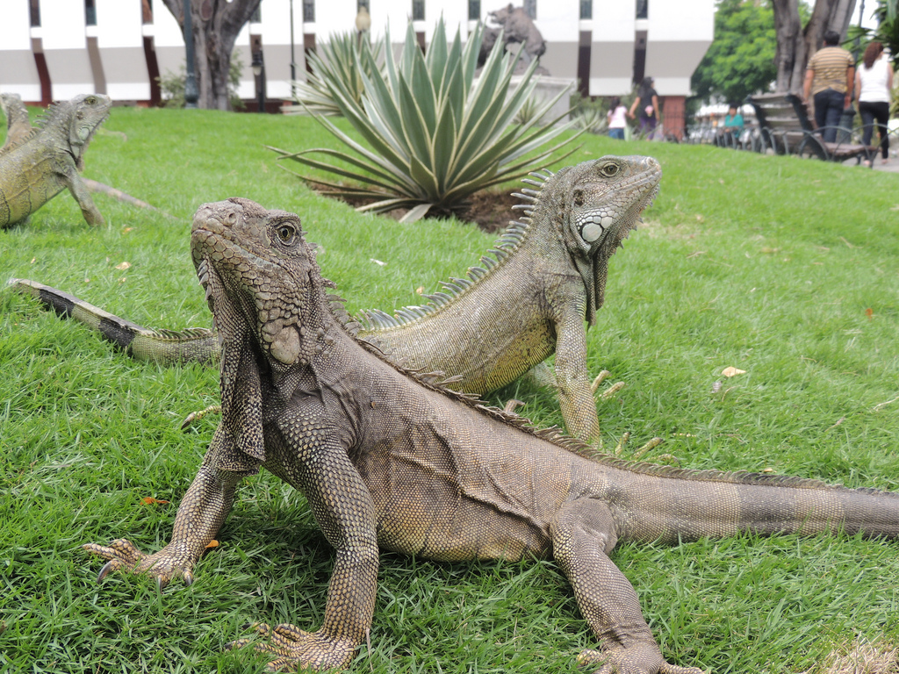

I feel lucky to be from Ecuador, a small country in South America that is full of breathtaking landscapes and rich culture. From the towering Andes mountains to the vibrant Amazon rainforest, I am always amazed by the natural beauty around me.
The Galápagos Islands, which belong to Ecuador, have always fascinated me. They are such a unique place that inspired Charles Darwin’s theory of evolution. I love how these islands are home to wildlife you can’t find anywhere else in the world—it truly feels like a paradise for nature lovers like me.
What I appreciate most about Ecuador is its vibrant indigenous cultures. I have grown up surrounded by colorful markets, traditional crafts, and lively festivals that show the deep history and traditions of my people. It’s something I am proud to share with others.
Quito, our capital city, is a special place to me. As a UNESCO World Heritage site, it holds a treasure trove of colonial architecture and history. Walking through its plazas, churches, and museums always reminds me of the rich story behind my country.
 


From the dense jungles of the Amazon basin to the peaceful beaches along the Pacific coast, I find Ecuador’s landscapes full of adventure and beauty. Whether I am hiking up an active volcano or relaxing in a hot spring, I always feel connected to the natural splendor of my homeland.
Here, I want to share something very special to me: the Ecuadorian national anthem. Every time I listen to it, I feel a deep sense of pride and connection to my country.